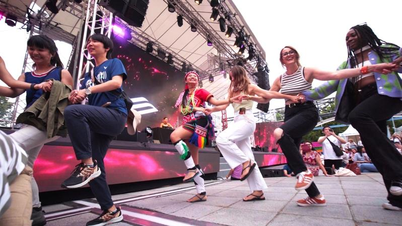
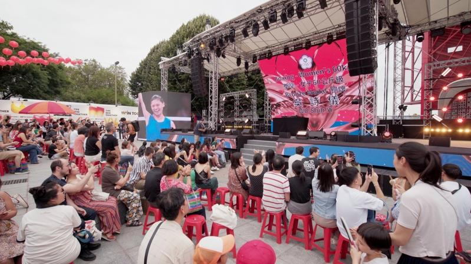
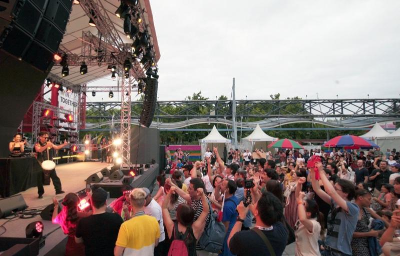
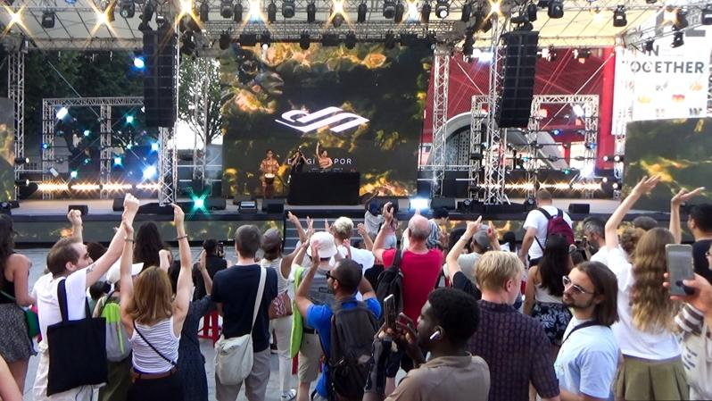
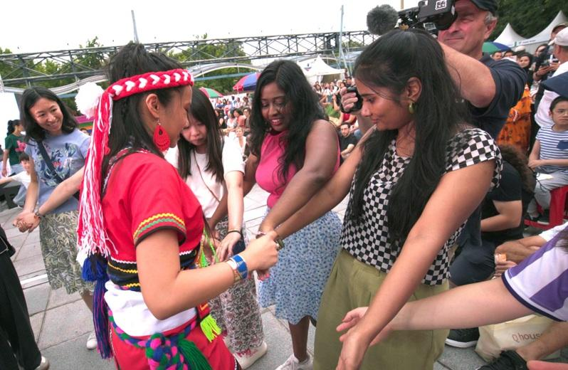

「把手打开，拥抱世界！」巴黎奥运台湾馆昨天傍晚表演进行时，一名身穿阿美族传统服饰的观众，随着台上DJ汝妮的阿美族电音节奏，热情的在台下带领观众齐跳阿美族围舞，现场气氛破表，结束后众人齐喊台湾！
这名观众名叫Miki Valjius，来自花莲和台东太麻里金仑村的排湾族与阿美族，目前在巴黎第三大学念语言学硕士班。她向中央社记者说，因为与台上的电音DJ汝妮是辅大努玛社（原住民社团）的学姊学妹，所以今天特别穿着阿美族传统服饰，来到台湾馆替她助阵。
Miki Valjius谈到在众人面前带舞并不会紧张，「如果你有来花莲参加过祭典，就会知道我们都很愿意分享，带动气氛，只是祭典中有男生、女生和传统的舞步，但我今天只有1个人，不能代表全部，只能尽我所能的呈现」，Miki Valjius非常客气的分享，希望观众仍把焦点放在DJ汝妮的表演上。
已经在台湾馆连演两场的DJ汝妮（Dungi Sapor），3日是她最后一场表演，亦为阿美族的她，来自花莲七脚川（吉安乡古名）。
DJ汝妮的风格以电音结合原住民人声Vocal闻名，这些人声有她长年在部落所采集的传统歌谣，更有现代的声音：汝妮会将她新作的电音编曲播放给部落耆老听，当耆老自然的唱出听后感后，再次采集歌声。
Miki Valjius表示自己最喜欢汝妮呈现古调的方式，「既保有传统，在加入许多现代的元素后，还是非常兼容，很好听。」
汝妮的电音风格因为融合世界原民音乐元素，再加上她对法国电音、非洲音乐、巴西音乐的喜好，在前两天已深受观众喜爱，大家跟着音乐自由摇摆。
昨天下午在Miki Valjius的即兴带动下，所有人不分国籍学跳阿美族围舞，但一开始都会下意识地将双手交叉，Miki Valjius花了一段时间调整众人姿势，她说：「把手打开，像是对世界拥抱那样」。
在台上的DJ汝妮在表演最后也向观众带动舞蹈，现场气氛不停破表，表演结束时观众仍意犹未尽，很多人跑到台前与汝妮和Miki Valjius合照，并大喊台湾！
台湾馆3日为庆祝台湾队定向飞靶选手李孟远与拳击选手吴诗仪夺牌，在每场表演开始前都会在舞台屏幕秀出选手的得奖英姿，并邀请台湾馆所有观众齐聚大喊：「Win Taiwan」，持续为台湾队加油打气！



